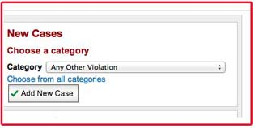
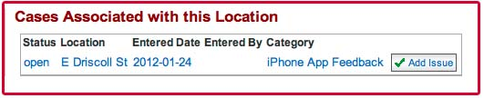

There are three ways to add a new case using uReport:
This is the most straight forward. Simply choose a category for your case and hit the "add new case" button.
You can first search for a location to see what pre-existing cases exist there. On each location's home page there is an add new case button that takes you to the form. You can also choose to add a new issue to an existing case instead.
Note: cases must be open to add a new issue to them.
When you search for a person, the add new case button on that person's homepage allows you to add a new case with that person listed as the reporter.
Just like locations, you can also choose to add a new issue to an existing case instead of opening a new case.
Adding a person or a location is not required. If someone wants to report something anonymously, simply do not add a person.
Looking up a location and a person enables you to add their history to the case. Learn more about Locations or People
Each category can have different fields associated with it. So the new case form changes depending on what category you've chosen.
You cannot change the catgory once you're on the form. It's better to go back to one of the three options above and choose a new category from there. You can change the category once the case is created. See more information on changing categories